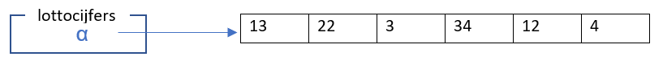
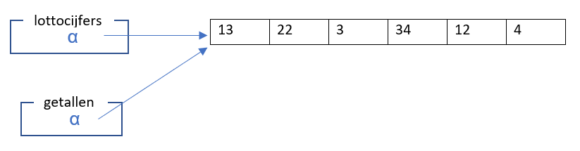
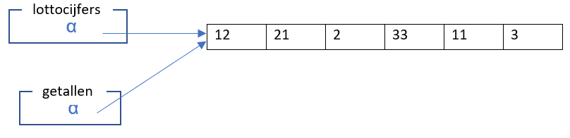
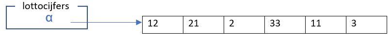
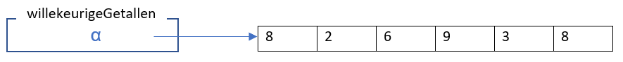
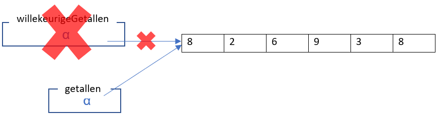

Programmeren Basis - Deel 11¶
1. Software ontwerp¶
De meeste realistische programma’s zijn groot en zeer complex. Die complexiteit wordt vooral veroorzaakt doordat we nu eenmaal ingewikkelde problemen proberen op te lossen met onze software.
Helaas betekent dit ook dat ze moeilijk te begrijpen zijn. Quasi alle programmeertalen bieden mogelijkheden die helpen bij de organisatie van complexe programma’s, in een poging ze begrijpbaarder te maken.
Deze technieken komen erop neer dat we de broncode opsplitsen in kleinere onderdelen. Elk onderdeel op zich is (hopelijk) makkelijker te begrijpen omdat we de rest van het programma grotendeels kunnen negeren. Let echter op : de complexiteit verdwijnt daarmee natuurlijk niet. In plaats van 1 groot onoverzichtelijk blok, krijgen we een verzameling van 'makkelijke' (kuch kuch) onderdeeltjes die met elkaar op een (hopelijk) overzichtelijke manier verweven zijn.
De afbakening van onderdelen en de manier waarop ze met elkaar verweven zijn, noemen we het ontwerp van ons programma. De technieken en inspanningen die daarbij komen kijken noemt men software ontwerp en is een belangrijk onderdeel van het software ontwikkelingsproces.
Methods zijn een essentieel hulpmiddel bij het structureren van ingewikkelde(re) broncode. We zullen later zien dat ze eigenlijk deel uitmaken van een nog grotere en krachtigere organisatiestructuur : klassen (Engels : classes).
Voorlopig concentreren we ons echter op methods en gebruiken ze om onze (steeds ingewikkelder wordende) programma’s te structuren.
2. Methods¶
2.1. Samenvatting¶
Een method is een een stukje code dat we afsplitsen van de rest van ons programma en een duidelijke naam geven.
We gaan natuurlijk niet willekeurig tewerk bij dit afsplitsen : een goeie method stelt een afgebakend stukje functionaliteit voor : de code in de method vertoont een zekere samenhang en de method heeft een duidelijke rol te vervullen in het grotere geheel.
We splitsen een complex blok code in kleinere stukjes (methods) die individueel gemakkelijker te begrijpen zijn. We kunnen dan elders in ons programma gebruik maken van de functionaliteit van zo’n method, door de method uit te voeren.
De opdracht die de uitvoering van een method in gang steekt, noemen we een method oproep (Engels : method call). De oproep vermeldt de naam van de betroffen method zodat duidelijk is welke method bedoeld wordt.
We hebben hier al veel voorbeelden van gezien. Sommige zijn werden meegeleverd bij de installatie van Visual Studio, andere schreven we zelf :
Voorbeeld waarin allerlei methods worden opgeroepen
// oproepen van voorgedefinieerde methods
string input = Console.ReadLine(); // methodnaam : ReadLine
int aantal = Convert.ToInt32(123.456); // methodnaam : ToInt32
Console.WriteLine("hello"); // methodnaam : WriteLine
// oproepen van zelfgedefinieerde methods
PrintMenu(); // methodnaam : PrintMenu
BegroetGebruiker("Jan"); // methodnaam : BegroetGebruiker
double bmi = BodyMassIndex(90, 180); // methodnaam : BodyMassIndex
bool extraDagNodig = IsSchrikkeljaar(2013); // methodnaam : IsSchrikkeljaar
Om het gedrag van een afgesplitst stukje code bij de uitvoering te beïnvloeden, kunnen we het in een method stoppen met parameters.
In het voorbeeld hierboven zijn er methods
-
zonder parameters
Readline(),PrintMenu()
-
met 1 parameter
ToInt32(123.456),WriteLine("hello"),BegroetGebruiker("Jan"),IsSchrikkeljaar(2013)
-
met 2 parameters
BodyMassIndex(90, 180)
De code in de method gebruikt de waarden van de parameters bij haar uitvoering. Zo zal BegroetGebruiker("Jan") en BegroetGebruiker("Mieke") niet exact hetzelfde gedrag opleveren, de parameter stuurt dus enigszins de werking van de method.
Welke soort (en hoeveel) parameters een method aanvaardt, staat in de hoofding bij de method definitie:
- een eerste parameter
gewichtInKgvan typeinten een tweede parameterlengteInCentimetervan typeint.
De vraag is, hoe krijgen die parameters tijdens de uitvoering hun waarde?
Nemen we een een simpele method met een gebruiker parameter :
static void BegroetGebruiker(string gebruiker) {
Console.WriteLine($"Welkom {gebruiker}, u bent nu aangemeld!");
}
Telkens die method wordt uitgevoerd, zal de inhoud van het bericht afhangen van de waarde van de gebruiker parameter.
De parameter krijgt z’n waarde op het moment van de method oproep!
-
de method
BegroetGebruikerwordt uitgevoerd en diens parametergebruikerkrijgt de waardeJan. -
de method
BegroetGebruikerwordt uitgevoerd en diens parametergebruikerkrijgt de waardeMieke.
Belangrijk
Een parameter is een speciaal soort variabele : het is een opslagplaats met een naam die een bepaald soort (type) waarde kan bevatten.
Bij een method oproep wordt elke waarde tussen de haakjes van de method oproep, gekopieerd naar de juiste parameter van de method definitie.
Het feit dat waarden worden gekopieerd, wordt later nog van belang als we met array types werken.
Je ziet dus dat we het effect van een method enigszins kunnen beïnvloeden door de parameters die we meegeven aan de method oproep.
Methods kunnen ook een waarde produceren/opleveren/retourneren, noem het zoals je wil. In het eerdere voorbeeld (waarin allerlei methods werden opgeroepen), kwamen enkele methods voor die een waarde opleverden :
string input = Console.ReadLine(); // (1)
int aantal = Convert.ToInt32(123.456); // (2)
double bmi = BodyMassIndex(90, 180); // (3)
bool extraDagNodig = IsSchrikkeljaar(2013); // (4)
-
de
ReadLineoproep produceert een string waarde -
de
ToInt32(123.456)oproep produceert een int waarde -
de
BodyMassIndex(90 180)oproep produceert een double waarde -
de
IsSchrikkeljaar(2013)oproep produceert een bool waarde.
Wat voor soort waarde er wordt geproduceerd, staat weerom in de hoofding van de method definitie :
- helemaal links net naast de naam van de method staat
doublewat aangeeft dat de method een double waarde oplevert.
Belangrijk
Ook hier is het belangrijk je te realiseren dat de geproduceerde waarde gekopieerd wordt naar de variabelen bij de method call.
2.2. Parameters doorgeven van value types¶
Dit kopieren van waarden bij het doorsluizen van parameters heeft belangrijke gevolgen voor value types en reference types.
Voor value types zoals int en double, moet je je realiseren dat de method op een eigen kopie werkt en dus de meegegeven waarde van de oproeper niet kan veranderen.
static void Main() {
int x = 9;
ToonVerhoogdGetal(x); // (1)
Console.WriteLine($"De waarde van lokale variabele x in Main, na de oproep van ToonVerhoogdGetal is {x}.");
}
static void ToonVerhoogdGetal(int p) {
p++;
Console.WriteLine($"De waarde van parameter p in ToonVerhoogdGetal is {p}.");
}
- de oproep van method
ToonVerhoogdGetaldie een9meegeeft als parameter
De uitvoer is…
De waarde van parameter p in ToonVerhoogdGetal is 10.
De waarde van lokale variabele x in Main, na de oproep van ToonVerhoogdGetal is 9.
De waarde 9 van x uit Main, werd bij de method oproep gekopieerd naar de opslagplaats van parameter p uit ToonVerhoogdGetal.
Die method werkt dus op een kopie en kan nooit invloed hebben op de waarde van x uit Main. Dit is tegelijk een voordeel en een nadeel :
-
voordeel
- de programmeur die
Mainschrijft hoeft zich geen zorgen te maken dat de oproep vanToonVerhoogdGetalz’n variabele overhoop gooit
- de programmeur die
-
nadelen
-
er moet iets gekopieerd worden en dat kost tijd (al is dit verwaarloosbaar voor een simpele int waarde)
-
een method kan nooit iets veranderen in de oproeper ook al is dit expliciet gewenst (eerder uitzonderlijk).
-
2.3. Parameters doorgeven van reference types¶
Het is belangrijk te beseffen dat bij reference types, een method wel degelijk waarden in de oproepende code kan veranderen.
We hebben tot nu toe 2 soorten reference types gezien : strings en array types.
Vermits strings sowieso immutable zijn, kunnen we deze niet gebruiken om dit aan te tonen. We zullen het dus moeten demonstreren met array types. Later zullen we nog andere soorten reference types tegenkomen waar dit ook relevant is.
Array types zijn dus reference types en eerder kwam aan bod dat een declaratie als die van lottocijfers hieronder :
In het geheugen als volgt (schematisch) kan voorgesteld worden :

Het type int[] is een reference type. De waarde van zo’n reference type is steeds een verwijzing naar iets (naar een int array in dit geval). We tekenen de verwijzing schematisch met een pijltje, maar het is effectief een waarde die we hier met α (alpha) aanduiden. Denk hierbij bv. aan een geheugenadres.
De waarde in variabele lottocijfers is dus een verwijzing α die wijst naar het eigenlijke int array met de waarden.
Veronderstel dat we een method VerlaagGetallen hebben die de getallen in een int[] kan verlagen :
static void VerlaagGetallen(int[] getallen) {
for (int i=0;i<getallen.Length;i++) {
getallen[i]--;
}
}
Dan kunnen we VerlaagGetallen oproepen met ons lottocijfers array als parameter :
We zagen eerder dat bij een method oproep, waarden worden overgekopieerd naar de opslagplaats voor de parameters van de method.
Dit is hier niet anders. Het enige verschil is dat de gekopieerde waarde een verwijzing is (i.e. de verwijzing wordt gekopieerd)!
Bij de method oproep wordt dus de waarde van variabele lottocijfers gekopieerd naar de opslagplaats voor de parameter getallen en dan ziet de situatie in het geheugen er als volgt uit :

Je ziet dat de α (alpha) waarde werd gekopieerd, anders gezegd : de verwijzing (zijnde het pijltje) werd gekopieerd.
Tijdens de uitvoering van VerlaagGetallen wijst de parameter getallen dus naar exact hetzelfde array als de variabele lottocijfers van bij de method oproep!
De method VerlaagGetallen zal dus waarden in dit array veranderen :

Eenmaal de method VerlaagGetallen is afgelopen, keren we terug naar de Main method met deze situatie :

Als je dit vergelijkt met de beginsituatie zie je dus dat de VerlaagGetallen method de inhoud van het array heeft kunnen aanpassen en dat de wijzigingen zichtbaar zijn voor de Main method.
En dat is het grote verschil tussen het doorgeven van parameters van een value type in vergelijking met een reference type.
Dit lijkt misschien een probleem, maar dat is het niet. Het is zelfs één van de voornaamste bestaansredenen voor reference types! Het doorsluizen van grote hoeveelheden data doorheen een programma op een efficiente manier.
Indien arrays value types zouden zijn, dan zouden er steeds ganse arrays moeten gekopieerd worden bij een method oproepen (denk aan een arrays met 100'000 waarden).
Door reference types te introduceren, moet er enkel 1 reference (verwijzing) gekopieerd worden ongeacht hoe groot het array is.
2.4. Return values teruggeven¶
Methods kunnen een waarde teruggeven/opleveren/retourneren, die waarde noemt men dan
-
de return value
-
de teruggeefwaarde
-
de geproduceerde waarde
-
het resultaat van de method
Het type van deze waarde moet in de hoofding van de method staan, links van de naam. We noemen dit het return type van de method.
Enkele voorbeelden
// methods die een waarde produceren
static bool IsSchrikkelJaar(int jaar) { ... } // (1)
static double GetGemiddelde(int[] getallen) { ... } // (2)
static string GetOmgekeerdeTekst(string tekst) { ... } // (3)
// methods die geen waarde produceren
static void PrintMenu() { ... } // (4)
static void BegroetGebruiker(string naam) { ... } // (4)
-
return type is
bool -
return type is
double -
return type is
string -
voidduidt erop dat er geen return type is, en dat de method dus ook geen waarde oplevert
De teruggeefwaarde wordt normaliter bij de method call onthouden in een variabele ofwel meteen gebruikt :
Console.WriteLine( GetOmgekeerdeTekst("hallo") ); // (1)
bool extraDagVoorzien = IsSchrikkeljaar(2013); // (2)
-
de teruggeefwaarde
ollahwordt meteen gebruikt als parameter voorWriteLine -
de teruggeefwaarde
falsewordt onthouden in de variabeleextraDagVoorzien
In de method definitie wordt de teruggeefwaarde vastgelegd door een return opdracht, wat ook meteen de method beëindigt.
Bij het uitvoeren van de return opdracht, moet de teruggeefwaarde dus overgeheveld worden naar de code die de method call uitvoerde. Ook hier wordt met een kopie gewerkt, net als bij het doorgeven van een parameter (maar dan in de omgekeerde richting natuurlijk).
Belangrijk
De teruggeefwaarde wordt gekopieerd naar de code die de method call uitvoerde.
Indien het return type een reference type is, is de waarde een verwijzing en wordt dus de verwijzing gekopieerd. Net zoals bij het doorgeven van een parameter van een reference type dus.
Voorbeeld van een method die een nieuwe array oplevert
We schrijven een method GetWillekeurigeGetallen die een array van willekeurige int waarden maakt en teruggeeft. Deze method heeft een parameter die aangeeft hoeveel getallen we willen. De getallen liggen tussen 1 en 10 (grenzen inclusief).
static int[] GetWillekeurigeGetallen(int lengte) { // (1)
int[] willekeurigeGetallen = new int[lengte];
Random rnd = new Random();
for (int index = 0; index < willekeurigeGetallen.Length; index++) {
willekeurigeGetallen[index] = rnd.Next(1, 11);
}
return willekeurigeGetallen; // (2)
}
static void Main() {
int[] getallen = GetWillekeurigeGetallen(6); // (3)
foreach (int getal in getallen) {
Console.Write(getal + " ");
}
Console.WriteLine();
}
-
Het return type is
int[], deze method levert dus een eenintarray op. -
De waarde die teruggegeven wordt is een verwijzing naar een
intarray. -
De teruggegeven verwijzing wordt gekopieerd naar de opslagplaats van variabele
getallen
Tijdens een uitvoering komt er bijvoorbeeld deze output uit :
Op het moment dat de uitvoering bij regel <2> aankomt, ziet het er in het geheugen zo uit :

De return opdracht stopt de method uitvoering en kopieert de verwijzing in lokale variabele willekeurigeGetallen naar de lokale variabele getallen in regel <3>. Merk op dat deze lokale variabelen bij verschillende methods horen.
Als de uitvoering aankomt bij de for loop in Main ziet het er in het geheugen dan zo uit :

De lokale variabele willekeurigeGetallen bestaat nu natuurlijk niet meer, omdat de uitvoering van GetWillekeurigeGetallen al afgelopen is.
Je ziet dat de GetWillekeurigeGetallen oproep dus een verwijzing naar een nieuw array opleverde, waarmee we in de rest van het programma kunnen verder werken.
3. Enumeraties¶
Tot nu toe waren alle datatypes die we gebruikten al voorhanden in C#, namelijk int, double, bool, string en hun array varianten.
Een enumeratie (Engels : enumeration) introduceert een nieuw (zelfverzonnen) datatype in ons programma.
We moeten deze enumeratie een naam geven en lijst van voorgedefinieerde waarden.
Enkele voorbeelden zullen dit wellicht snel duidelijk maken :
enum KledingMaat { ExtraSmall, Small, Regular, Large, ExtraLarge }; // (1)
enum Richting { Links, Rechts, Boven, Onder }; // (2)
enum Geslacht { Man, Vrouw, Andere }; // (3)
enum Tarief { Regulier, Senioren }; // (4)
-
dit datatype heeft de naam
KledingMaaten heeft 5 mogelijke waarden -
dit datatype heeft de naam
Richtingen heeft 4 mogelijke waarden -
dit datatype heeft de naam
Geslachten heeft 3 mogelijke waarden -
dit datatype heeft de naam
Tariefen heeft 2 mogelijke waarden
Elk van deze enums introduceert een eigen datatype dat we kunnen gebruiken voor variabelen, parameters en return type.
Voorbeelden
Een enum gebruiken bij de declaratie van een variabele met initiële waarde :
Een enum waarde gebruiken in een vergelijking :
Een enum gebruiken als type voor een method parameter, en een bijbehorende method call :
Een enum gebruiken als return type en een bijbehorende return opdracht :
Geslacht g = VraagGebruikerOmGeslacht();
static Geslacht VraagGebruikerOmGeslacht() {
...
return Geslacht.Vrouw;
}
De definitie van een enumeratie hoort op hetzelfde (nesting) niveau te staan als de methods in je broncode, dus niet in een method.
Het is gebruikelijk ze helemaal bovenaan te zetten, boven alle methods.
Voorbeeld dat toont waar de enumeratie in de broncode hoort te staan
class Program {
enum Richting { Links, Rechts, Boven, Onder }; // (1)
static void Main() {
...
VerplaatsSpelerNaar(Richting.Boven);
...
}
static void VerplaatsSpelerNaar(Richting r) {
...
}
}
- enumeraties staan bovenaan de broncode, boven alle methods.
Belangrijk
Let erop dat je steeds de naam van de enum moet vermelden bij de waarde die je gebruikt, dus je schrijft
KledingMaat.Smallen nietSmall.De reden hiervoor is dat de namen van de waarden niet noodzakelijk uniek zijn in een programma, bv. er kunnen meerdere
Smallwaarden bestaan :KledingMaat.SmallenLetterGrootte.Small.
Als je voor een bepaald stukje informatie een beperkt aantal waarden hebt, zou je dit natuurlijk ook kunnen regelen met string of int waarden. Het voordeel van een enumeratie is, dat de compiler kan verifiëren dat je een correcte waarde gebruikt.
Voorbeeld waarom string geen alternatief is voor een enumeratie
Het datatype string laat quasi oneindig veel waarden toe (alle mogelijke strings) terwijl we er eigenlijk maar een paar willen toelaten. Bijvoorbeeld :
- niks garandeert ons dat hier een correcte "tarief string" staat.
Had je de typfout opgemerkt? Volgens de compiler is er alleszins niks mis mee.
Voorbeeld waarom int geen alternatief is voor een enumeratie
Het datatype int laat ook teveel mogelijkheden toe (er zijn 2^32 mogelijke waarden) terwijl we er maar een paar willen toelaten. Bovendien is niet duidelijk wat de betekenis is van de toegelaten getallen. Bijvoorbeeld :
- Welke richting is
0in godsnaam?
Welk getal met welke richting overeenkomst zal wel ergens in commentaar of andere documentatie staan, maar handig is het niet. Bovendien vindt de compiler elk geheel getal dolletjes, zelfs "richting" -12345.
Belangrijk
Enumeraties bieden een veilige en leesbare manier om een eigen datatype te definiëren dat een vast aantal voorgedefineerde waarden aanbiedt.
4. Console mogelijkheden¶
We hebben al veel mogelijkheden van de console besproken en zullen er hieronder nog een paar behandelen.
Als je nieuwsgierig bent naar wat er nog zoal bestaat, kijk dan beslist eens naar de officiële documentatie :
- https://docs.microsoft.com/en-us/dotnet/api/system.console
4.1. De cursor positioneren¶
Tot nu toe hadden we weinig controle over waar onze teksten op de console terechtkwamen. De cursor schoof gewoon door bij elke Write en versprong naar de volgende regel na een WriteLine.
We kunnen de cursor op een hele specifieke positie plaatsen met behulp van
Console.SetCursorPosition(kolom, regel)
-
de parameter
kolombepaalt de horizontale locatie van de cursor- een geheel getal van
0t.e.m.Console.WindowWidth - 1
- een geheel getal van
-
de parameter
regelbepaalt de verticale locatie van de cursor- een geheel getal van
0t.e.m.Console.WindowHeight - 1
- een geheel getal van
De expressies Console.WindowWidth en Console.WindowHeight stellen resp. de breedte en de hoogte van het console venster voor.
Een kleine demonstratie :
int maxKolom = Console.WindowWidth - 1;
for (int i = 0; i < 10; i++) {
Console.SetCursorPosition(i, i);
Console.Write("\\");
Console.SetCursorPosition(maxKolom - i, i);
Console.Write("/");
}
Probeer dit zeker eens uit!
4.2. Eén enkele toets inlezen¶
We kunnen de gebruiker vragen om een tekst in te typen m.b.v. Console.ReadLine() en af te sluiten met Enter.
Maar wat als we slechts 1 enkele toetsdruk nodig hebben? Bijvoorbeeld voor de klassieke To start press any key.
Er bestaat een Console.ReadKey() method die precies doet wat we nodig hebben :
-
wacht tot de gebruiker op een toets drukt
-
de return value vertelt ons om welke toets het ging
In de praktijk ligt het helaas wat moeilijker.
-
Het console venster houdt een buffer bij van ingetypte symbolen die nog niet door een
ReadLineofReadKeywerden verwerkt. Als de gebruiker de A toets ingedrukt houdt en het programma doet pas over 2 seconden eenReadLine, dan zul je zien dat er onmiddellijk al een ganse resemA's verschijnen. -
Er zijn verschillende soorten toetsen (denk aan speciale gevallen zoals Shift) en er is een verschil tussen wat er op een toets staat en welk karakter eruit komt als je erop duwt (denk bv. a versus Shift+a).
De return waarde van ReadKey is een ConsoleKeyInfo object met informatie over de toetsdruk (welke toets was het, was shift ingedrukt, etc.). Vermits we nog niks over objecten weten, zullen we het op een paar voorbeelden houden :
ConsoleKeyInfo cki = Console.ReadKey();
if (cki.KeyChar == 'a') { // (1)
// er werd op 'a' gedrukt
} else if (cki.KeyChar == 'A') { // (1)
// er werd op 'a' geduwd (in combinatie met Shift ofwel stond Caps Lock aan)
}
- let op, hier wordt
.KeyChargebruikt.
Als de gebruiker op een toets drukt bij ReadKey, dan verschijnt de letter van die toets natuurlijk op de console. Als je dit wil vermijden (bv. bij spelletje) dan kun je Console.ReadKey(true) gebruiken.
Speciale toetsen zoals de pijltjes toetsen kun je als volg opvangen :
ConsoleKeyInfo cki = Console.ReadKey();
if (cki.Key == ConsoleKey.LeftArrow) {
// er werd op de "pijltje links" toets gedrukt
} else if (cki.Key == ConsoleKey.RightArrow) {
// er werd op de "pijltje rechts" toets gedrukt
}
- let op, hier wordt
.Keygebruikt.
Die ConsoleKey is trouwens een enumeratie! Deze documentatie vind je op
- https://docs.microsoft.com/en-us/dotnet/api/system.consolekey
Soms wil je niet wachten tot er op een toets gedrukt wordt, maar wil je enkel weten of er een toets "klaar staat" in de buffer. Dit kun je checken met Console.KeyAvailable. Indien dit true is, betekent dit dat er een toetsdruk klaarstaat.
while (true) {
if (!Console.KeyAvailable) {
Console.WriteLine("...niks");
} else {
ConsoleKeyInfo cki = Console.ReadKey();
Console.WriteLine("..toets ingedrukt");
}
}
Waarschuwing
Merk op dat de iteraties in deze loop elkaar zo snel opvolgen dat je slechts sporadisch een
..toets ingedruktzult zien passeren als je een toets ingedrukt houdt.
In je besturingssysteem zit namelijk een instelling die bepaalt hoe vaak per seconde een toetsdruk geregistreerd wordt als je een toets ingedrukt houdt. Dit lijkt vreemd, maar bedenk dat elke toetsdruk bij het typen een aantal milliseconden duurt en dat de computer in die korte tijd al duizenden keren het toetsenbord zou kunnen scannen en dus duizenden toetsdrukken zou kunnen herkennen.